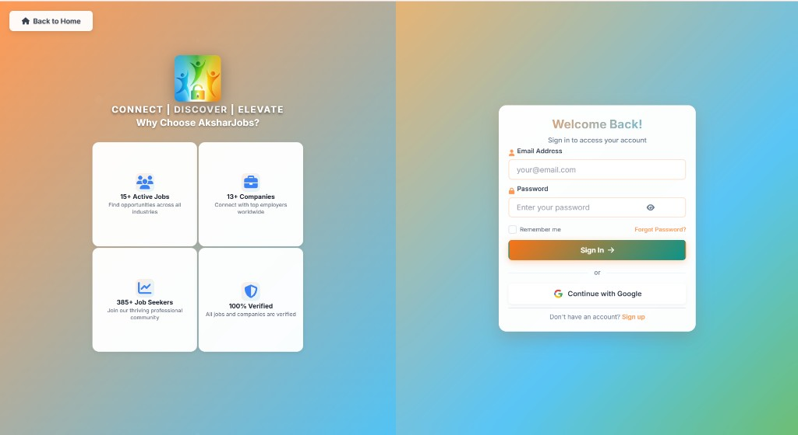
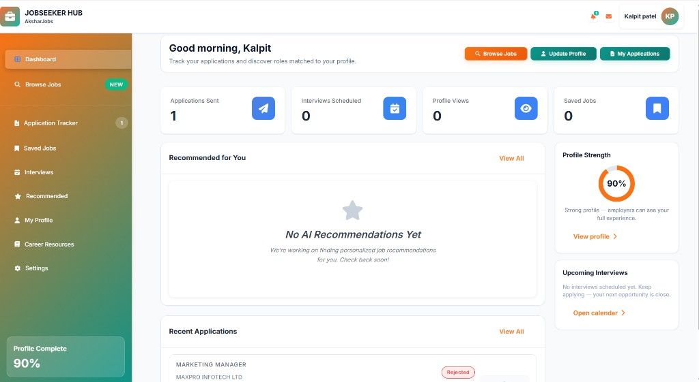

Job marketplace
Akshar Jobs
A job marketplace connecting talent with employers across Kenya — search, apply, and hire in one multi-role platform.

A job marketplace connecting talent with employers across Kenya — search, apply, and hire in one multi-role platform.
Akshar Jobs is a modern job portal we built to help professionals discover opportunities and help employers hire with clearer tools — spanning seekers, recruiters, and related community roles.
The product includes search and filters, application tracking, role-based dashboards, and a brand UI tuned for Kenyan cities and hiring workflows.


Serve multiple user types in one product — seekers, employers, and partners — without making search, applications, or posting feel fragmented.
We shipped role-based experiences on a shared core: secure auth, searchable listings, application flows, employer tools, and dashboards that keep each role focused.
We design and engineer multi-role platforms with clear UX and durable architecture.